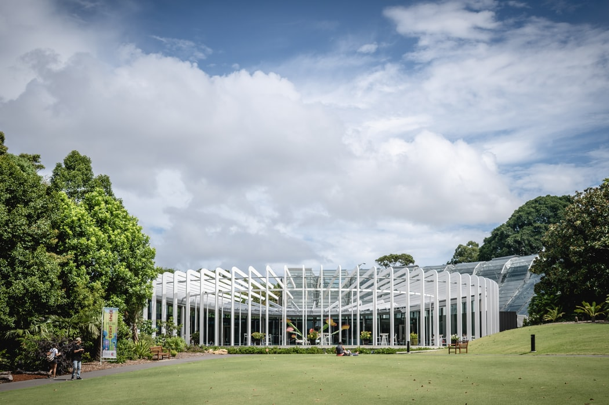
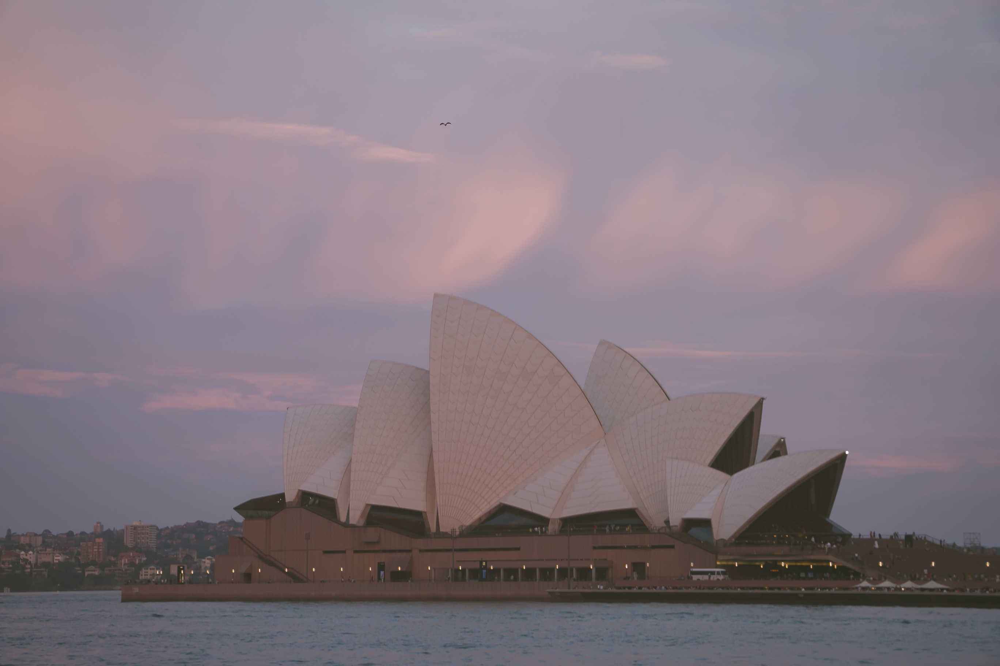
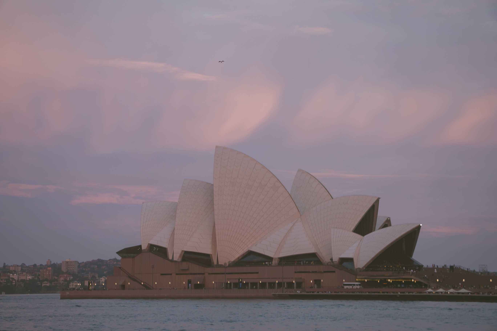

2019.01.20-26 SYDNEY
 the center of cul & edu
the center of cul & edu About SYDNEY
시드니는 호주 동부에 위치한 도시로 호주내에서 문화와 교육의 중심지로 불리며, 호주 전체 인구의 1/4이 몰려있다. 온화한 기후로 연간 평균기온은 21.9℃이다.
1788년 1월 26일, 영국 제1 함대 선원들과 영국계 이주민들이 시드니 부근에서 최초의 식민지 건설을 개시하였다. 시드니라는 이름은 당시 영국의 각료였던 시드니 경(卿)의 이름을 딴 것이다.
이 날은 호주의 록스 지역에 영국인들이 최초로 상륙하여 오늘날의 시드니를 개척한 것을 기념하기 위한 날로, 현재 'Australia Day'로 불리는 호주의 최대 국경일 중 하루이다. 이 날을 기념하기 위해 캔버라와 시드니, 맬버른, 브리즈번, 퍼스, 다윈 등 호주의 주요 도시에서는 크고 작은 기념행사가 열린다.
하지만 반대로 호주의 원주민에게는 'Australia Day'가 토지와 모든 것을 빼앗긴 'National Day of Mourning'이다. 국경일의 날짜 변경을 요구하는 원주민들은 이 날에 Invasion Day 행진을 해오고 있다.
– 3 –
Royal Botanic Gardens_ 시드니 왕립식물원
도시 속의 오아시스라고 불리는 이 식물원은 30ha의 넓이에 고도는 0m, 기온 13.5∼21.7℃, 강우량 1,143mm의 환경을 가졌다. 원내에는 시드니열대식물관, 희귀소나무관, 희귀·멸종위기식물관, 선인장정원, 장미정원, 허브정원, 시드니양치류관, 야자수숲 등 10여 개의 테마파크로 구성되어 있다. 자연의 아름다움이 잘 조화된 이 식물원은 시드니에서 가장 오랜 역사를 가졌지만, 테마파크로서 체계를 갖춘 것은 1980년대 이후이다.
시드니열대식물관 외에는 모두 무료로 입장할 수 있으며, 관람시간은 시드니열대식물관(10∼16시)과 선인장정원(9∼19시 30분), 양치류정원(9시 30분∼17시)을 제외하고는 아침 7시부터 해가 질 때까지 관람가능하다. 그밖에 식물에 관한 정보센터와 교육센터가 운영되며, 관람객들을 위한 레스토랑과 카페 등도 갖추어져 있다.
https://www.rbgsyd.
nsw.gov.au/
– 4 –

https://unsplash.com/photos/ruOdzHeBfL4
– 5 –
MCA_ 시드니 현대미술관
시드니 현대 미술관은 시드니 서큘러 키(Circular Quay) 동쪽의 록스 지역에 위치해 오페라 하우스(Opera House)를 정면으로 바라보고 있다.
호주의 예술가 존 파워(John Power, 1881~1943)가 현대 시각예술의 교육과 발전을 위해 시드니 대학에 자신의 유산을 기증하면서 미술관의 기초를 닦았고 1991년에 개관했다. '현대 미술의 집합소'로 불리는 이곳은 신인 작가에서부터 앤디 워홀 등 유명 작가의 작품 5000여 점을 전시하고 있다. 창의적인 신인 작가를 발굴해 전시하는 곳으로도 유명하다.
작품 대부분은 정기적으로 교체된다. 입장료는 무료이며 이용자의 기부금을 통해 운영되고 있다. 특별 기획 전시를 하는 경우에는 별도의 이용료를 받기도 한다.
https://www.mca.com
.au/artists-works/exhi
bitions/746-mca-colle
ction-today-tomorro
w-yesterday/
– 6 –


Today Tomorrow Yesterday: MCA Collection
– 7 –
Art Gallery of New South WALES_뉴사우스웨일스 미술관
뉴사우스웨일스 주립 미술관(Art Gallery of New South Wales)은 시드니의 도메인 지역에 위치한 미술관으로 1871년 설립된 빅토리아 국립 미술관에 이어 오스트레일리아에서 두 번째로 큰 미술관이다.
상시 전시의 경우 입장료는 무료이며, 특별 전시의 경우 유료로 운영되기도 한다. 매일 오전 10시부터 오후 5시까지 운영하며 매 주 수요일의 경우 오후 9시까지 운영하며 이 날에는 콘서트나 영화를 볼 수 있는 행사가 열리기도 한다.
https://www.artgallery.
nsw.gov.au/

– 8 –


Art Gallery of New South Wales
– 9 –
Betty's Burger_ 베티스 버거
호주에 있는 프랜차이즈 수제버거 브랜드 중 하나이다. 홈페이지를 통해 온라인 주문도 가능하다. 시드니에 있는 지점은 Darling Harbour 근처에 위치한다.
https://www.bettysbu
rgers.com.au/

– 10 –

Betty's Burger_ sydney
– 11 –
Harbour Bridge_ 하버 브릿지
시드니 도심에 자리한 철제 아치교이다. 시드니 오페라 하우스와 함께 시드니를 대표하는 상징물로 꼽힌다. 1932년 개통될 당시 세계에서 가장 긴 다리로 주목을 받았다. 1923년 착공을 시작하였으며 8년이 넘는 건설 기간 동안 해마다 1,500명 이상의 고용이 이루어졌다. 당시 경제 대공황을 벗어나도록 도왔다는 긍정적 효과가 있었다. 전체 길이 1,149m, 높이 134m, 폭 59m이다. 8차선 도로에 철도 노선과 보행자 도로가 놓여 있다.
아치 모양 덕분에 ‘옷걸이(The Coat Hanger)’라 불리기도 한다. 매년 1월 1일 0시가 되면 달링 하버와 시드니 오페라 하우스, 시드니 하버 브리지 주변에서 세계에서 가장 큰 규모로 알려진 새해맞이 불꽃놀이가 벌어진다. 매년 3월 중순 시드니 하버 브리지 완공 기념일 전후로 마라톤 등 다양한 행사가 펼쳐진다.
– 12 –

Harbour Bridge
– 13 –
Opera House_ 오페라하우스
20세기를 대표하는 현대 건축물로 조개껍데기 형태의 아름답고 우아한 외양이 특징이다. 호주를 대표하는 종합 극장으로 문화적 가치를 인정받아 2007년에는 세계문화유산으로 선정되었다.
시드니 오페라하우스의 건설은 1950년대 극장 설립 운동을 기반으로 시작되었다. 건물 디자인을 위해 1957년에 열린 국제 콩쿠르에서 덴마크 출신 건축가 요른 웃손(Jørn Utzon)의 작품이 당선되었으며 2년 뒤에 오페라하우스의 본격적인 공사가 시작되었다. 그는 아침식사를 하기 위해 꺼내든 오렌지 껍질을 벗기는 과정에서 조개껍데기 모양의 획기적인 디자인을 구현하는 데 영감을 얻었다. 건물은 14년 만인 1973년에 완공되었으며 현재는 시드니뿐만 아니라 호주를 대표하는 상징물로 자리하고 있다.
거의 매일 공연이 열릴 정도로 수많은 공연 일정이 잡혀 있다. 티켓은 오페라하우스 안에 있는 박스 오피스에서 판매하며 홈페이지를 통한 예약도 가능하다. 공연을 관람할 때는 공연마다 드레스 코드가 있는 경우가 있으며, 보통 청바지나 운동화는 피하는 것이 좋다.
– 14 –
 


AM 10:42
PM 6:09
PM 6:38
– 15 –
"시드니 항구의 아름다움을 독자들에게 전할 수 있으리라는 희망을 나는 포기했다." 영국의 소설가 앤서니 트롤럽은 이렇게 썼다. "이 만을 아름답다고 말할 수는 있지만 묘사할 수는 없다." 그렇다고 대영제국의 통치자들이 꼴 보기도 싫은 죄수들을 지상 낙원으로 보냈을 리는 만무하다. 1788년 그들이 이 해변에 깃발을 꽂았을 때, 물 한 톨 찾아보기 어려운 퍽퍽한 벌판에는 땅에 떨어져도 썩지 않는 독성의 식물들만이 시큰둥하게 서 있을 뿐이었다.
유형수들과 군인들은 기근과 고통의 공감대 속에 이 도시의 터전을 만들었다. 이 항구를 세상에서 가장 아름다운 장소로 변모시킨 뒤, 그 아름다움의 정점에 오페라 하우스를 세웠다. 덴마크 출신의 건축가 외른 우트존(Jørn Utzon)의 설계안이 공모를 통해 당선되고, 1973년 완공에 이르기까지의 과정은 아직도 미스터리로 여겨질 정도로 파격이었다.
신대륙에 건설된 아름다운 고전 예술의 장. 그러나 자유분방한 시드니 시민들은 이곳을 고리타분한 장식물에 머무르게 하지 않았다. 2010년 3월 1일, 공공장소에서 대규모 누드 사진을 찍는 프로젝트로 유명한 스펜서 튜닉이 이 오페라 하우스 앞에 자원 참가자들을 불러 모았다. 유명한 동성애자 퍼레이드(Sydney Gay and Lesbian Mardi Gras) 행사의 일환으로 벌어진 이 프로젝트에 모여든 사람은 5,200명. 2001년 멜버른의 4,500명 기록을 깼다.